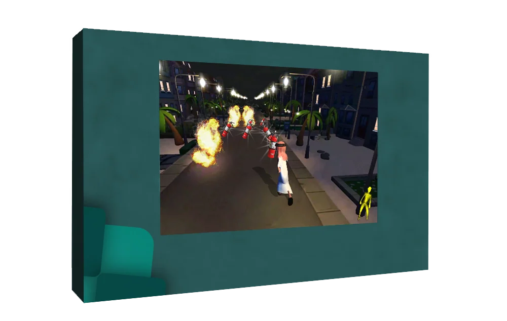

Side-view race option
The emergency-services emblem is isolated in zero-based layer 3, Vector Smart Object, in the wide composition and layer 5, logo(1), in the compact composition.
Two perspectives on a running activity.
Explore the story
Show how different race viewpoints could sit within a shared display language.
A wide side-view course uses a runner silhouette, distance marks and cones. A compact forward-facing street scene presents another option inside a related teal surround.
The emergency-services emblem is isolated in zero-based layer 3, Vector Smart Object, in the wide composition and layer 5, logo(1), in the compact composition.
Hiding only those emblem layers produces zero changed pixels outside their rectangles in each native baseline comparison. Existing game imagery and display geometry remain intact.
The wide concept places a white runner silhouette over a nighttime city course with distance markers and traffic cones.
Explore the complete compositions and interface states. Select any image for a closer look.
02 / PROJECT IMAGES
Select a view to explore.
Wide teal display mockup showing a white runner on a city course with distance markers and traffic cones.
Teal display mockup showing a forward-view running game with a character, flames and fire extinguishers.

Structure, interaction and visual decisions that give the work its character.
RoleConfirm display presentation and compositing work separately from game development, gameplay design, character art, environment assets and physical fabrication.
AssetsEmbedded game scenes may include supplied or third-party gameplay artwork and models. Their presence in a PSD does not establish ownership or original programming. The native derivatives remove only isolated identity emblems.
StatusPrivate game-presentation study. Two layered mockups reviewed; runtime behavior, hardware integration, source-game ownership and delivery unverified.